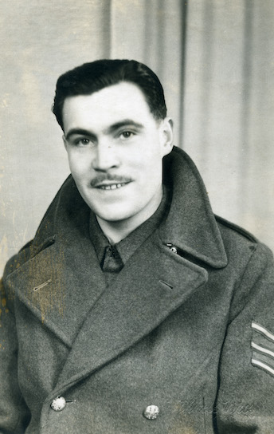

Bio
Jack Fairfield was born on the 27th July, 1915 in Kirkcaldy, Fife, Scotland. The oldest
of four brothers;
David, James, Frank and Norman; and sons of Edward and Ada Elizabeth née Webster.
He started working for, Wemyss Coal Co. Ltd, East Wemyss in Fife in 1938, until he was
transferred to their
office at 116 Hope Street, Glasgow early 1939.
It was during this time, while studying to sit the Intermediate Examination of the
Chartered Institute of
Secretaries exams, to be held sometime in 1940, that he heard the news over the radio at
11 a.m. ‘that we were
at war with Germany.’
On March 1940 he was ordered to appear for a medical examination at the Church Hall in
Victoria Road, Kirkcaldy
in Fife. On the 16th March he was formally sworn in and told he had been enrolled in the
Royal Army Ordnance Corps
(RAOC).

“I had no idea what this was! The word ‘ordinance’ reminded me of
guns.”
Throughout his time in the RAOC Jack Fairfield wrote an expansive journal describing
his
time during the war; it’s trial and tribulations and the eventual impact it had on
his life during and after
the war.
“This is no tale of heroics. It is merely a short account of my time
spent in the forces
from March 1940 until September 1946 during the second world war”
Enjoy an interactive map experience around the UK below and learn more about the
places
Jack visited during his time in the second world war, which include passages from
his journal, along with
personal photos.